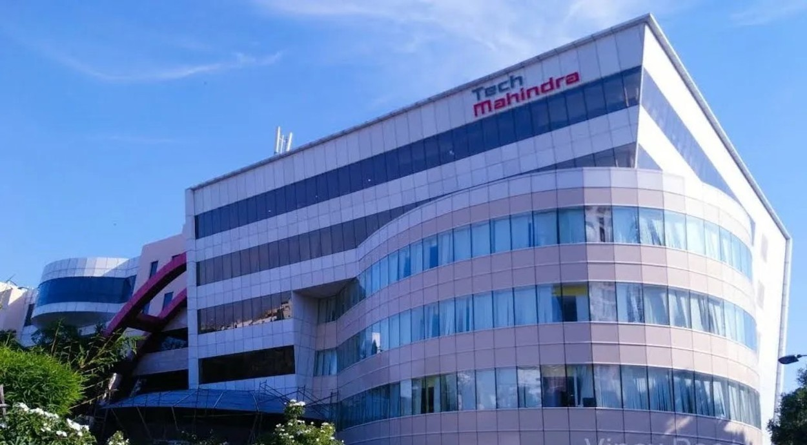

About TECH MAHINDRA

Tech Mahindra Limited is an Indian multinational information technology services and consulting company. Part of the Mahindra Group, the company is headquartered in Pune and has its registered office in Mumbai.
It is a top-tier Indian IT services provider specializing in digital transformation, 5G technology, consulting, cloud computing, cybersecurity, and business process services for clients worldwide across telecommunications, manufacturing, banking, and enterprise domains.
History
Tech Mahindra was established in 1986 as a joint venture between Mahindra & Mahindra and British Telecommunications (BT) under the name Mahindra-British Telecom (MBT). The company initially focused on providing technology services to the telecommunications sector.
In 2006, the company rebranded to Tech Mahindra. A landmark moment in its history occurred in 2009 when Tech Mahindra acquired Satyam Computer Services following an accounting scam, successfully turning around the organization and rebranding it as Mahindra Satyam. The two entities officially merged in 2013, creating one of India's largest IT services companies.
Today, Tech Mahindra operates across 90+ countries, driving next-generation technology initiatives including AI, IoT, network services, and cloud infrastructure for global enterprises.